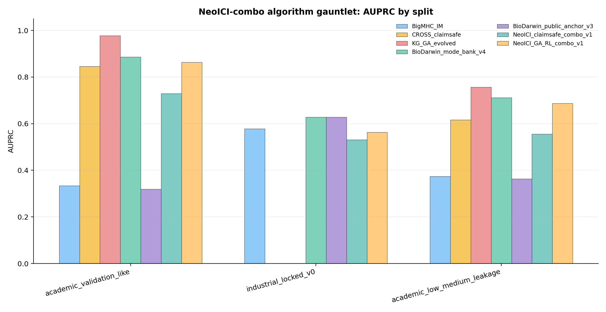

KG_GA_evolved
AUPRC 0.978prior GA/RL champion; production branch only
New NeoICI scores combine the existing vaccine rankers with HLA-I, dual-class helper, TCR/MD, BioDarwin mode-bank, and GA/RL controllers. This is a production and experiment-priority package; clinical treatment selection remains forbidden.
prior GA/RL champion; production branch only
selected after industrial mini-set; diagnostic only

| split | algorithm | algorithm_family | AUPRC | AUROC | top10_hits | top24_hits | claim_disposition |
|---|---|---|---|---|---|---|---|
| academic_validation_like | BioDarwin_mode_bank_v4 | biodarwin | 0.8863066757803602 | 0.97244521588197 | 9 | 10 | prior BioDarwin comparator |
| academic_validation_like | NeoICI_GA_RL_combo_v1 | new_production_ga_rl | 0.8633158508158509 | 0.9830765892818399 | 8 | 10 | experiment-priority; freeze before prospective wetlab |
| academic_validation_like | CROSS_claimsafe | claim_safe_prior | 0.846480282703193 | 0.9919722282490779 | 8 | 10 | prior claim-safe comparator |
| academic_validation_like | NeoICI_claimsafe_combo_v1 | new_claimsafe | 0.7294486237668056 | 0.9438055977435453 | 6 | 9 | reviewer-safe fallback; no industrial/patient superiority claim |
| academic_validation_like | BigMHC_IM | public_comparator | 0.3337050077519977 | 0.8277283575612931 | 4 | 6 | external public comparator |
| industrial_locked_v0 | BioDarwin_mode_bank_v4 | biodarwin | 0.6279786662139604 | 0.638888888888889 | 5 | 9 | prior BioDarwin comparator |
| industrial_locked_v0 | BigMHC_IM | public_comparator | 0.5781211163564105 | 0.6111111111111112 | 4 | 9 | external public comparator |
| industrial_locked_v0 | NeoICI_GA_RL_combo_v1 | new_production_ga_rl | 0.5629672685938671 | 0.5972222222222222 | 4 | 9 | experiment-priority; freeze before prospective wetlab |
| industrial_locked_v0 | NeoICI_claimsafe_combo_v1 | new_claimsafe | 0.5310920986752188 | 0.6041666666666666 | 5 | 9 | reviewer-safe fallback; no industrial/patient superiority claim |
| champion | comparator | wins | tested_metrics | win_fraction | disposition |
|---|---|---|---|---|---|
| NeoICI_GA_RL_combo_v1 | BigMHC_IM | 10 | 12 | 0.8333333333333334 | champion wins most tested axes |
| NeoICI_GA_RL_combo_v1 | BigMHC_EL | 12 | 12 | 1.0 | champion wins most tested axes |
| NeoICI_GA_RL_combo_v1 | CROSS_claimsafe | 7 | 8 | 0.875 | champion wins most tested axes |
| NeoICI_GA_RL_combo_v1 | KG_GA_evolved | 0 | 8 | 0.0 | mixed; keep comparator in ensemble |
| NeoICI_GA_RL_combo_v1 | BioDarwin_PanVax_v2 | 7 | 12 | 0.5833333333333334 | mixed; keep comparator in ensemble |
| NeoICI_GA_RL_combo_v1 | BioDarwin_mode_bank_v4 | 4 | 12 | 0.3333333333333333 | mixed; keep comparator in ensemble |
| NeoICI_GA_RL_combo_v1 | BioDarwin_public_anchor_v3 | 9 | 12 | 0.75 | champion wins most tested axes |
| NeoICI_GA_RL_combo_v1 | GA_public_feature_adapter | 4 | 4 | 1.0 | champion wins most tested axes |
| NeoICI_GA_RL_combo_v1 | NeoICI_claimsafe_combo_v1 | 10 | 12 | 0.8333333333333334 | champion wins most tested axes |
| context | method | headline | claim_boundary |
|---|---|---|---|
| prior_GA_RL_full_board | KG_GA_evolved | AUPRC=0.933; validation AUPRC=0.978 | CHAMPION for retrospective + validation-like + low-leakage benchmark; freeze before prospective wetlab |
| prior_GA_RL_full_board | CROSS_claimsafe | AUPRC=0.861; validation AUPRC=0.846 | Claim-safe fallback when GA/RL proxy/product features are too risky |
| prior_GA_RL_full_board | CROSS_integrated | AUPRC=0.878; validation AUPRC=0.714 | Fixed integrated comparator; strong but less novel than KG-GA |
| prior_GA_RL_full_board | CROSS_BMA | AUPRC=0.861; validation AUPRC=0.660 | Comparator or component |
| prior_GA_RL_full_board | CROSS_stress | AUPRC=0.872; validation AUPRC=0.651 | Comparator or component |
| prior_GA_RL_full_board | CROSS_finetuned | AUPRC=0.841; validation AUPRC=0.606 | Comparator or component |
| prior_GA_RL_full_board | BigMHC_IM | AUPRC=0.672; validation AUPRC=0.334 | External public comparator/component, not CROSS-Neo claim engine |
| prior_GA_RL_full_board | BigMHC_EL | AUPRC=0.648; validation AUPRC=0.308 | External public comparator/component, not CROSS-Neo claim engine |
| prior_GA_RL_full_board | BAR-Neo_confidence | AUPRC=nan; validation AUPRC=nan | Best strict no-overlap production reliability baseline; compare separately from 2,715-board GA |
| prior_GA_RL_full_board | BAR-Neo | AUPRC=nan; validation AUPRC=nan | Best strict no-overlap production reliability baseline; compare separately from 2,715-board GA |
| prior_GA_RL_full_board | BAR-Neo_patient_gated | AUPRC=nan; validation AUPRC=nan | Best strict no-overlap production reliability baseline; compare separately from 2,715-board GA |
| prior_GA_RL_full_board | BAR-Neo-X | AUPRC=nan; validation AUPRC=nan | Best strict no-overlap production reliability baseline; compare separately from 2,715-board GA |
| external_method_landscape | BigMHC | evaluated_locally | Strong public comparator; industrial TG4050 mini-set baseline to beat. |
| external_method_landscape | NetMHCpan-4.1 / NetMHCIIpan | partial_local_ITSNdb_only | Class-II server/predictor is important for next CD4-helper benchmark. |
| external_method_landscape | MHCflurry 2.0 | evaluated_locally | Best clean external AUROC on several wave11 bundles. |
| external_method_landscape | PRIME / PRIME2.0 | evaluated_locally | Useful immunogenicity comparator; local rows available. |
| external_method_landscape | TransPHLA | evaluated_locally | Binding-oriented; some local scores saturate near 1.0 and require calibration caution. |
| external_method_landscape | DeepImmuno | ITSNdb_local | Included in local and literature comparisons. |
| external_method_landscape | IMPROVE | dataset_manifest_only | Useful benchmark/source; current local extract needs label reconstruction before metrics. |
| external_method_landscape | MUNIS | not_yet_local | Presentation/epitope competitor to add if code/model access is available. |
| external_method_landscape | NeoTImmuML | not_yet_local | Recent 2025 immunogenicity model; compare as literature/implementation target. |
| external_method_landscape | PHLA | not_yet_local | Recent 2025 method; needs install/source availability check. |
| external_method_landscape | weakly supervised peptide-TCR model | not_yet_local | TCR-profile mode is relevant to future BioDarwin patient-specific mode. |
| external_method_landscape | NeoPrecis-Immuno | not_yet_local | Current high-level comparator concept; may be response-prediction rather than peptide-only benchmark. |
| neoici_gauntlet::academic_validation_like | KG_GA_evolved | AUPRC=0.978; AUROC=0.999; top10=9/10 | prior GA/RL champion; production branch only |
| neoici_gauntlet::academic_validation_like | BioDarwin_PanVax_v2 | AUPRC=0.886; AUROC=0.972; top10=9/10 | prior BioDarwin comparator |
| neoici_gauntlet::academic_validation_like | BioDarwin_mode_bank_v4 | AUPRC=0.886; AUROC=0.972; top10=9/10 | prior BioDarwin comparator |
| neoici_gauntlet::academic_validation_like | NeoICI_GA_RL_combo_v1 | AUPRC=0.863; AUROC=0.983; top10=8/10 | experiment-priority; freeze before prospective wetlab |
| neoici_gauntlet::academic_validation_like | CROSS_claimsafe | AUPRC=0.846; AUROC=0.992; top10=8/10 | prior claim-safe comparator |
| neoici_gauntlet::industrial_locked_v0 | BioDarwin_public_anchor_v3 | AUPRC=0.628; AUROC=0.639; top10=5/10 | selected after industrial mini-set; diagnostic only |
| neoici_gauntlet::industrial_locked_v0 | BioDarwin_mode_bank_v4 | AUPRC=0.628; AUROC=0.639; top10=5/10 | prior BioDarwin comparator |
| neoici_gauntlet::industrial_locked_v0 | BigMHC_IM | AUPRC=0.578; AUROC=0.611; top10=4/10 | external public comparator |
| neoici_gauntlet::industrial_locked_v0 | NeoICI_GA_RL_combo_v1 | AUPRC=0.563; AUROC=0.597; top10=4/10 | experiment-priority; freeze before prospective wetlab |
| neoici_gauntlet::industrial_locked_v0 | NeoICI_public_anchor_v1 | AUPRC=0.535; AUROC=0.618; top10=5/10 | diagnostic public-only fallback |
GA/RL is useful and currently strong for experiment priority. For reviewer-safe claims, keep NeoICI_claimsafe_combo_v1 and CROSS_claimsafe as fallback. The next real test is GSE222011/GSE255830 TCR phenotype replay and then controlled WES/RNA access.